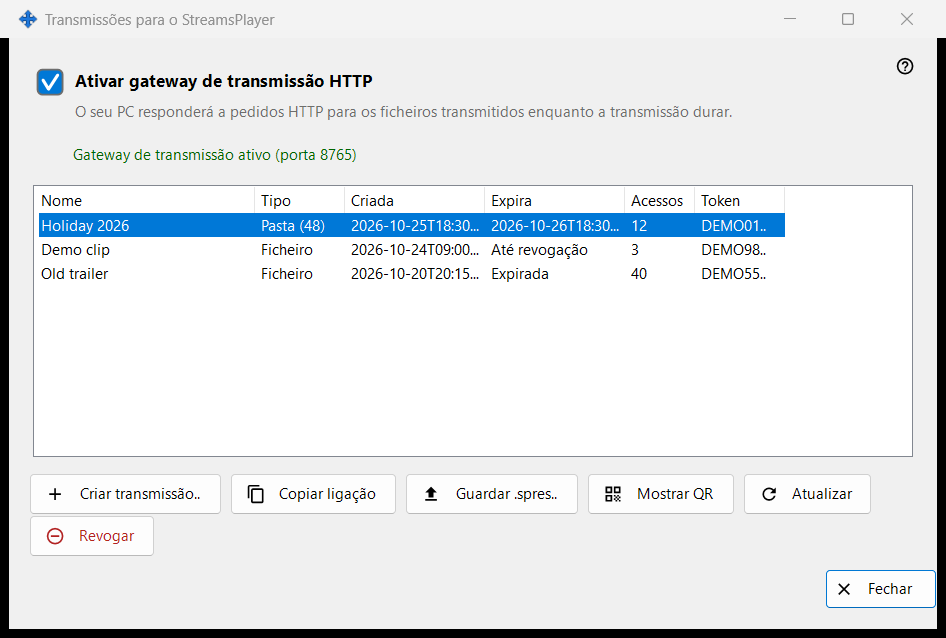
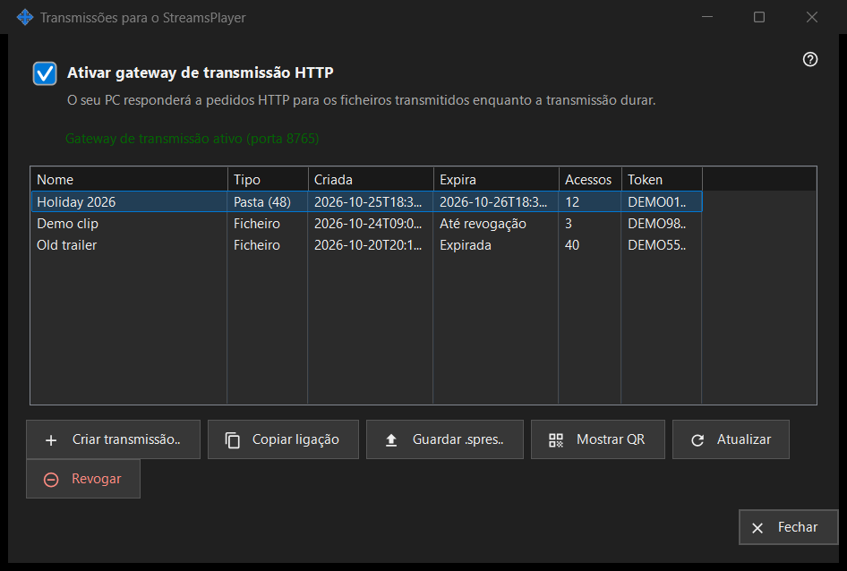

Transmissões para o StreamsPlayer
Finalidade
Gere as transmissões HTTP de ficheiros multimédia e pastas que este PC oferece à aplicação StreamsPlayer. Abre-se a partir do botão «Transmissões..» ou do item do menu de adicionar da janela principal do Share Manager, que só aparecem quando o serviço de partilha indica suporte para transmissões. Um arranque com um caminho abre a janela e vai diretamente para a caixa «Criar transmissão» desse caminho.


Nesta ordem
- Marque «Ativar gateway de transmissão HTTP» ou crie simplesmente uma transmissão, o que liga o gateway.
- Clique em «Criar transmissão..», escolha o ficheiro multimédia, defina o título, a duração e a opção de internet e clique em «Transmitir».
- O link é copiado para a área de transferência.
- Selecione uma linha e use «Copiar link», «Guardar .spres..» ou «Mostrar QR» para entregar a transmissão a um dispositivo.
- «Revogar» uma transmissão quando já não for necessária.
Os elementos
Interruptor do gateway
A caixa liga ou desliga o gateway HTTP. A linha abaixo diz «O gateway de transmissão está desligado» ou «Gateway de transmissão ativo (porta N)». Enquanto o gateway estiver ativo, este PC responde aos pedidos HTTP dos ficheiros das transmissões. Se o gateway não conseguir arrancar (porta, firewall), a caixa volta ao seu estado real e o motivo aparece numa linha vermelha por baixo; uma recusa nunca abre uma caixa de diálogo.
Lista de transmissões
Colunas: Nome, Tipo (Ficheiro, ou Pasta com o seu número de itens), Criada, Expira (uma data, «Até revogação» ou «Expirada»), Acessos e Token, que mostra apenas os seis primeiros caracteres. A lista relê-se sozinha a cada 5 segundos. Um duplo clique numa linha copia o seu link.
Criar transmissão..
Pede um ficheiro multimédia e abre a caixa «Criar transmissão». Depois de a aceitar, o gateway é ligado se for preciso, a transmissão é criada e o seu link é copiado para a área de transferência com marcadores de privacidade; uma mensagem confirma a cópia.
Atualizar e Revogar
«Atualizar» só está disponível para a transmissão de uma pasta e pede ao serviço que a atualize; uma mensagem confirma. «Revogar» funciona em qualquer linha e pergunta primeiro: «Revogar a transmissão X? O link deixará de funcionar imediatamente.» Uma transmissão revogada não pode ser restaurada; crie uma nova.
Quando a página está desligada
Se o serviço de partilha não responder ou não tiver suporte para transmissões, a página desliga-se sozinha no próprio lugar e a linha vermelha diz porquê, por exemplo que esta versão do serviço de transmissão está desatualizada ou que não foi possível concluir a ação, com os detalhes no registo.
Definições do gestor · Definições de partilha SFTP · Definições do servidor de troca